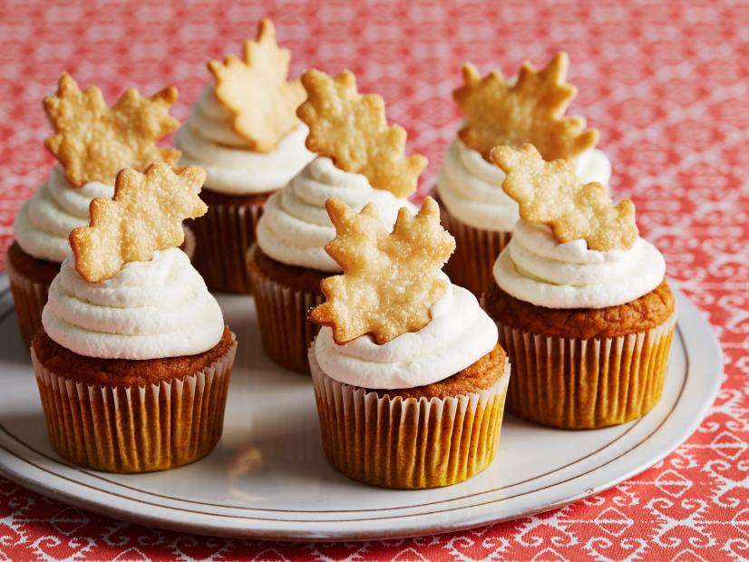

Pumpkin Cupcakes

Description
This pumpkin cupcake recipe is an amateur's take on an exquisite and undoubtedly professional recipe from none other than the food network.
What makes this an amateur's recipe? In my first ever attempt at constructing these pumpkin cupcakes as an act of gratitude for a friend of mine,
I made a fateful mistake: I forgot the milk. Almond milk, that is. Thus, the key to these cupcakes is to forget the milk.
Ingredients
Cupcake Ingredients
- cooking spray
- 1 3/4 cups cake flour
- 2 teaspoons pumpkin pie spice
- 1 1/2 teaspoons baking powder
- 1/2 teaspoon fine salt
- 1 15 oz. can of pure pumpkin puree
- 1 cup granulated sugar
- 1 1/2 sticks unsalted butter, melted
- 2 large eggs (brown)
- 1/4 cup milk
- 2 teaspoons pure vanilla extract
Icing Ingredients
- 4 oz cream cheese [ROOM TEMPERATURE]
- 3/4 cups confectioners' sugar
- 2 cups heavy cream